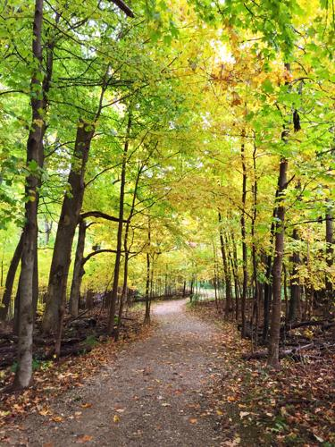

I'm a hands-on type of person. I loved Lego as a child and even now begin projects by tinkering before ever planning anything out. Theoretical math and esoteric formulas confused me more than they helped explain, even though I know they work and trust them wholeheartedly. Seeing the gears turn, holding the mechanism in hand, and watching the machinery in action is the foundation of my comprehension.
So, while I love all Sciences, be it physics, astronomy, chemistry, geology — they're all fascinating in their own right — I tend to feel much more "at home" whenever it comes to the Natural Sciences. Watching the tadpoles in early Spring lose their tails and become frogs by late summer just makes sense to me; I can see it happen. Knowing Jupiter is a massive planet far off in space with many moons of its own is one thing, but when I put my eye to the eyepiece and see it, that's something else altogether. It makes the magic a reality. Physically holding the million-year-old fossil in my hand becomes almost a surreal experience since this animal isn't just an artist's conception in a book anymore, it's the actual remains of a life that lived all those years ago.
Sometimes I'm conflicted, however, since I know deep down that the fundamental answers to the universe and its workings are explained by physics, but physics uses incomprehensible equations describing a realm one can only imagine. Nothing on the quantum, subatomic-particle scale behaves anything like it does on ours, so insufficient metaphors must suffice. I trust the physicists and strive to understand their symbolic descriptions, but ultimately fall short of making the connections in my mind. Atoms are simply much too small, particle-wave duality is just too strange, and decaying particles and quantum leaps are just too foreign for my mind to fully grasp.

I prefer reality on the human level. Our brains evolved on this scale, so it makes sense that it makes sense. Not only is it easy to comprehend and understand Nature's mechanisms, the beauty in nature really shines at this wavelength as well. Majestic oak trees, dazzling songbirds, swarms of glowing fireflies, a twinkling starry sky… No one could deny the awe in a scene like that. Watch any nature documentary and I dare you to yawn — especially the Blue Planet or Planet Earth series. It's utterly astounding to watch it on a screen, and I couldn't imagine what it would be like to see these wondrous, far-off places in real life.
But simply taking a stroll in my local park is sufficient to satisfy my appreciation of nature. Getting to see the different animals and their routines throughout the year is enlightening and enjoyable. Watching the leaves sprout from tiny buds, becoming full, healthy, and green, ultimately transforming into the vivid colors of Autumn is a beautiful thing to witness as well as intriguingly interesting. It's surprising how much you can learn simply by taking the time to observe. Nature on this scale is accessible; its mechanisms understandable, and its patterns comprehensible. I get it. It's there for us all to understand and appreciate — and that's a beautiful thing.